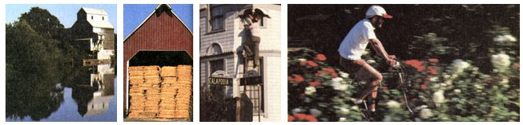

Oregon's Willamette Valley
Second installment of series on best parts of North America in which to pursue a rural lifestyle, including climate, economics and crime, recreation, taxes, the people.
By Sara Pacher
November/December 1986
Cream of the Country
Here's the second in a series on the best sections of North America in which to pursue a rural lifestyle.Photographed by George Olson
Between 1840 and 1870, a half-million people traveled the arduous Oregon Trail. By horse, wagon, and on foot, they left Missouri (and civilization) behind and set out on a 2,000-mile, six-month journey across vast, treeless plains, countless treacherous rivers, forbidding desert, and steep mountain passes. At the Snake River, in what is now southeastern Idaho, the Oregon Trail branched. To the south lay the Great Basin, the Sierra Nevada, and California. After the '49 gold strike there, the fever to go west became epidemic.
Many of the Oregon-bound pioneers, however, preferred rich land to gold. The deep wagon tracks of those who turned north still mark sections of their route along the Snake, across the Blue Mountains, to the Columbia River. From there, a perilous boat trip or a treacherous route around Mt. Hood brought them to their final destination: Oregon's 100-mile-long, 30-mile-wide Willamette Valley (pronouced Wil-LAMM-ette).
This amazing stretch of land, bordered on the east by the Coastal Range and on the west by the Cascades, was named the French Prairie after its first homesteaders, French-Canadian fur trappers, who were encouraged by the Hudson's Bay Company at Fort Vancouver to retire on the open meadows in the middle of the valley to help secure British claim to the territory.
The trappers were followed in 1834 by American Methodist missionaries. They came to convert the Northwest natives, but they also spread the gospel of this new "Garden of Eden" to the folks back east. Nine years later, these settlers created a provisional American government at their mission on Mill Creek at Chemeketa, now Salem, the capital of Oregon.
Early arrivals found 11-foot-tall elephant grass; thick oak forests; hillsides covered with huge, straight evergreens; and nuts, berries, and game in abundance. Winters brought torrential rain, but Oregon was also a land of rainbows. In 1846, J. Quinn Thorton wrote of the countryside, ". . . the clusters of trees are so carefully arranged, the openings so gracefully curved, the grounds so open and clean, that it all seems to be a work of art; and these beautiful avenues are calculated to cheat the imagination into the belief that they lead to some farmhouse or pleasant village."
Today, those farmhouses and villages are a reality-and there's more: Old covered bridges cross clear, rocky creeks; clean, neatly laid-out towns and cities are connected by well-used bike paths; rich pastures provide grain for cattle, sheep, horses, and goats; fields of golden wheat and grass-seed crops flourish; orchards and berry patches provide an abundance of fruit; well-kept vineyards produce wines that are gaining national recognition; and specialty farms sell such products as winter pears, flower bulbs, onions, peppermint, and hazel nuts to a worldwide market.
There are, in fact, few temperate-climate crops that won't thrive in the Willamette Valley, which has 215 frost-free days annually and some of the richest soil and most diversified agriculture in the world. It's notable, too, that three-fourths of Oregon's farms (which average 486 acres versus a national average of 437) are operated by their owners, as compared to one-half nationwide.
Home gardens also flourish. If an urban resident has no backyard, the front lawn often supports corn, tomatoes, and squash. State and county agricultural departments actively encourage this grow-it-yourself attitude with information and seminars on food preservation and gardening skills. County extension offices also rent out canning equipment for nomimal fees. Unfortunately, these same resources are heavily tied to the use of chemical fertilizers, insecticides, and herbicides. One result is that a chemically caused hardpan is forming under some sections of the valley.
Nevertheless, organic gardening is very popular. Certified organic farms market vegetables, fruits, berries, nuts, herbs, seeds, and grain. Oregon Tilth, the organization that runs the certification program, has created new standards that are likely to become guidelines for the nation's organic farm industry. At present, the two farming methods, like so many of Oregon's seemingly opposing elements, coexist peaceably. Tilth board member Harry MacCormack's gardening column alternates in the Corvallis paper with another filled with chemical gardening tips. And in the Corvallis First Alternative food co-op, organic and nonorganic types of produce are sold side by side.
(This co-op, which was started in 1970, now has 8,000 members, who pay a one-time, $5 refundable membership fee. With only five full-time-equivalent employees, it has the atmosphere of a gourmet grocery, but prices are much lower than in supermarkets. Two hundred volunteers devote two hours a week to running the co-op in exchange for an extra 15% off their bills. Nonmembers pay a 5% surcharge on purchases.)
Getting There
The Willamette is easy to reach nowadays. Interstate 5 cuts the valley in half, and-at Salem, Albany, and Eugene-intersects major routes leading east over the Cascades. A half-dozen highways wind to the coast, and Amtrak offers daily service between Eugene, Albany, and Salem, with connections to Los Angeles and Seattle.
Eugene's attractive Malhon Sweet Airport, sitting in the middle of wheat fields and usually filled to capacity with travelers, is served by five major airlines with flights to San Francisco, Denver, Portland, Los Angeles, Phoenix, Seattle, Boise, Dallas, Palm Springs, Las Vegas, and Chicago.
The Climate
No one will deny that Oregon winters are rainy, cloudy, and depressing. Summer fog, too, occasionally creeps over from the coast. Yet the Willamette's rainfall averages just 46" annually (from 7.10" in December to 0.35" in July), which is less than that of Chicago, New York, Miami, or New Orleans; it just seems like more because about half the total occurs during the three winter months. Winter temperatures, however, seldom fall below 25°F, and the typical two-week warm spell in February sometimes fools even old-timers into thinking spring has arrived, though most locals don't plant gardens until early May. There's measurable snow some five days of the year. Thunderstorms and strong winds are rare. Summer highs are normally in the 80s, but even when temperatures soar into the 90s, cool nights require a blanket. Autumns are clear and dry.
There are, in fact, over 150 days of sunshine a year in the Willamette, averaging 5.4 days in December and 25.6 in July. To get a jump on gardening and to cope with light deprivation, skylights, greenhouses, and solar window boxes are enormously popular and-despite winter overcasts-remarkably efficient. (Commercial greenhouses are big business, and Oregon's nursery production now ranks fourth in the nation.) Solar energy is encouraged by state tax credits and by low-interest solar-installation loans from utilities.
And the winter rains are a blessing, since they provide water for irrigation during the sunny, dry growing season. Wells can generally be brought in at between 50' and 100' at a cost of around $7 a foot.
A climate so encouraging to plant life is not, however, an ideal one for those with pollen allergies. Furthermore, the valley's grass-seed farmers (who produce much of the nation's fescue, Kentucky bluegrass, and other grass-seed varieties) spend much of August burning their fields in order to sterilize the soil. This, along with the yearround burning of slash left over from clearcut logging of privately owned timber and of the huge national forests that border the Willamette valley, creates unwelcome air pollution.
Economics and Crime
Oregon suffered less than most states during the Great Depression, but-because forestry and agriculture are now its largest industries-the 1980s recession hit earlier and has lasted longer. Oregon lost 70,000 jobs in retailing, wood products, and construction alone, 60,000 of which paid more than $10 an hour. Recently, 11,500 of the 15,000 lost retail jobs have been regained, but wages for those employees are $5 to $6.50 an hour. Currently, Oregon's average private sector per capita income is $12,000, compared to a national average of $18,400, but in valley communities, the range is from a high of only $10,826 to a low of $8,240. Incomes in the Portland area (city population, 371,500; metropolitan area, 1.2 million) north of the valley average $13,000.
Economic hardship usually brings increases in crime, and for the first three months of 1986, crimes against people were up in the valley, but crimes against property dropped (perhaps due to active neighborhood watches). The figures are still impressively low. For example, in Lane County, of which Eugene (Oregon's second largest city with a population of 106,000) is the county seat, crimes against persons totaled just 765 per 100,000 people. In Benton County (county seat Corvallis; population, 41,500) there were 150, while Portland's Multnomah County had 4,726, and the 1984 national average was 5,222 per 100,000.
In the 1970s, Oregon had a no-growth governor and a profusion of "Californians, Go Home" stickers, but the economic downturn changed all that. Since 1980, the valley's population has decreased. Most of these people left to look for jobs, some went in search of sun, and others, needing more room, took off for British Columbia or Alaska.
But Oregonians, native-born or not, tend to face problems with positive action. For example, with the decline in the fishing industry because of overharvesting, the Oregon coastal communities are pushing tourism, and many of those travelers spill over into the Willamette, creating numerous service jobs. Entrepreneurs also abound, and electronics has become the state's fourth largest industry. High-tech industries, currently concentrated near Portland, are moving to the valley. Corvallis, for example, has a robotics plant, while Teledyne Wah Chang in Albany produces rare metals like titanium and zirconia along with other aerospace materials (though the firm has been accused of some serious toxic-waste pollution). Such companies are attracted here because of the Willamette's other big industry: education.
Mind and Spirit
Where the Oregon Trail branched at the Snake River, the California Trail was marked by a cairn of gold quartz, while the route north had a sign that read: "To Oregon"; Oregonians, it's said, didn't want anyone coming there who couldn't read.
In 1843, missionary leader John Lee and his associates-in addition to forming a government-founded the Oregon Institute. It was the first house of higher learning west of the Rockies and later became Salem's Willamette University. Today, the valley can also boast of the University of Oregon (Eugene), Oregon State University (Corvallis), Western Oregon State College (Monmouth), Lane Community College (Eugene), Linn-Benton Community College (Corvallis), Clackamas Community College (Oregon City), Chemeketa Community College (Salem), Mt. Hood Community College (Gresham), and Umpqua Community College (Roseberg).
Over 12% of the students are enrolled in the combined OSU-Western Oregon State College School of Education, which has the largest teacher-preparation program in the Northwest. It accredits elementary and secondary programs in a seven-state area and is a consulting center for the deaf in a fourstate area. Graduates earn between $11,000 and $15,000 in their first year of teaching, and their performance is literally "warranted." First- and second-year teachers can call on the School of Education for help with problems, and an employer can request an audit of a new teacher's classes, as well as a weekend training program on classroom management and discipline. If this doesn't improve the situation, the School of Education will provide and pay for a substitute teacher.
In Eugene, 1,832 people, including 900 full-time faculty members (six of whom are members of the National Academy of Sciences), are now employed by the University of Oregon. Another 4,444 work for the Eugene public schools. Corvallis' university and public schools employ 8,731.
Since 1945, the University of Oregon has produced 17 Rhodes scholars, two Nobel Prize winners, and six governors . . . while its students have received 39 Guggenheim awards and 17 Sloan awards. At OSU, one out of every six students is enrolled in a graduate program. UO's Journalism School is among the top six in the country; its Division of Special Education has become a model for research in mental retardation. Oregon doesn't lose this brainpower when students get their degrees, either; 50% of OSU's graduates, and 60% of UO's, stay in the state.
The same excellence in education is found in public schools. Eugene's 4-J District, for example, has an International High School which focuses on global literature, politics, social issues, and culture, and offers Spanish, German, French, Japanese, Russian, Chinese, and Arabic. Among the district's public alternative schools are two that conduct half their classes in French and Spanish; one where math, reading, science, spelling, social studies, and P.E. are taught through the use of dance, drama, and visual arts; and one that stresses excellence in reading, math, language arts, composition, and penmanship. Of high school graduates, 54% enter college or pursue further education. The district also includes two night schools, a vocational center, an opportunity center, a talented and gifted curriculum, and programs for the visually impaired, the mildly and severely handicapped, and those with hearing and speech problems.
As would be expected, such a well-educated populace supports numerous cultural attractions. Eugene, as well as every other town in the valley, has more than its share of art galleries, museums, festivals, and cultural events, such as the Bach Festival held each June. Craftspeople have a wonderful outlet at the Eugene Saturday Market.
Recreation
Another attraction of the Willamette is outdoor recreation. All the possibilities offered by the spectacular Oregon coast are just an hour or so away. The Cascades challenge hikers, mountaineers, and skiers. The ski season runs at least 10 months a year, with 10 ski areas, including Mt. Hood, Mt. Bachelor, and Hoodoo, within a twoto three-hour drive. Rivers, streams, and mountain lakes offer superb fishing, and game is still plentiful. (Deer are actually problem pests in urban rose gardens.) Sailing and windsurfing are popular on the huge Fern Ridge Reservoir outside Eugene, and so are canoeing on the Willamette and white-water rafting on the McKenzie. There are dozens of nearby city, county, and state parks, as well as tennis courts, golf courses, and bike and jogging trails. The many wineries that dot the valley have tasting rooms and picnic areas. Pioneer museums, antique outlets, secondhand stores, and garage sales abound, reflecting the Oregonian's penchant for recycling. (The State has a model container law, the results of which are easily seen in the cleanliness of the towns and countryside.) And just a bit of wandering around lightly traveled country roads can turn up some serendipitous discoveries.
In Beaver Creek, for instance, I ran across "The Dahlia Lady," Vida Bullis, who, in her 70s, raises hundreds of varieties of dahlias. Her customers arrive when the flowers are in bloom to select the types they like, and she tags the plants and gets the bulbs to the purchasers before the next growing season. Two of the largest poplar trees in the state-172 feet tall and some four feet in diameter-also grow on her dahlia farm. "Poplar trees aren't supposed to live very long," Vida told me, "but these were about this same size when I moved here 50 years ago."
Then, while in search of some of the covered bridges near Scio, I decided to check out the Roaring River Fish Hatchery. I never got there. At the fork of Crab Creek and Roaring River, I came upon the Larwood Covered Bridge, and beside it a small county park with picnic tables, an old water wheel, and the ideal swimming hole, complete with a rope swing attached to the bottom of the bridge for sailing Tarzanlike into the water.
During August's meteor showers, I camped out on Mary's Peak-the highest in Oregon's Coastal Range-which offers a spectacular view of the valley. (To Native Americans, it was Chintimini, "The Place of the Spirits.") Driving down to the tiny community of Alsea at 6:30 the next morning in search of breakfast, I chanced upon The Farmer's Country Kitchen, a charming restaurant with a lovely, little herb garden and first-class, inexpensive food.
Land, Houses, and Taxes
Land is not inexpensive in the Willamette, but it's certainly less costly than in many other areas of the country. According to a Eugene real estate agent, prices there are now at 1977 levels. A glance at a local paper turned up a five-acre ranch with a "lovely home" near Junction City for $49,000; 10 acres, a two-story farmhouse, a small orchard, and a pasture eight miles outside Albany for $57,500; a two-bedroom home on a half-acre lot in Eugene for $20,500; and a 19-acre ranch near Eugene, with fenced pastures, a year-round creek with irrigation rights, a large barn, a shop, and a doublewide mobile home for $65,000.
There's an otherwise excellent state law, however, that makes locating your perfect place a little difficult. In order to keep the countryside from being developed into subdivisions, land parcels have been frozen at their present size. A farmer can't, for example, break off and sell five acres. The farm must stay intact.
Those contemplating a move to the Eugene or Corvallis area would be wise to do so in summer when school is out. At that time, apartments and rental houses are readily available for $175 and up.
Property is assessed at 100% of true market value and taxes vary by county, but to give you some idea of the highest rates, Eugene has a tax of $29.59 per $1,000 and Corvallis, $26.77 per $1,000. There's no sales tax, though, nor does Oregon impose an inventory tax. Inheritance and gift taxes were both eliminated in 1986, and state income tax brackets range from 4% to 10%.
Oregon teachers consistently put a salestax measure on the ballot, to increase revenues for education, and it's always defeated. But, even back in 1843, when the provisional government set up a tax structure, it had a hard time collecting the funds-"even from our own executive committee." Nothing much has changed since then.
The People
By 1845, there were 2,000 settlers in the valley, most under the age of 45. The average age now is around 30, except in Benton County, where it's 25. Even farmers are younger than the national average. Senior citizens, however, make their influence felt, especially through dozens of newspapers and organizations that confront all kinds of social and economic issues. In fact, almost every group-and even some neighborhoods-publish their own newspapers.
Though the early settlers were largely Scotch-Irish, the mix of people that make up the population is now diversified, both ethnically and politically. At the northern end of the valley, you'll find Russian Orthodox Starovery, "Old Believers," whose brightly dressed women wear boots and long skirts. Czechs settled near Scio. Other heritages are reflected in festivals, which occur throughout the valley on a nearly constant basis. Aurora has a German Sausage Dinner; Junction City celebrates a Scandinavian Festival; Mexican Fiesta Days are held in Woodburn; Mt. Angel, where there's a Swiss Benedictine monastery, has an Octoberfest; and the Grande Ronde Tribal Restoration Celebration, featuring ceremonies and dances of the seven Confederated Tribes of the Grand Ronde, is sometimes held in the Willamette. The largest "cultural group" seems to be the Californians . . . but they've blended quite well into the landscape. "About the only way to spot ex-Californians," one Oregonian remarked, "is that they drive faster than we do."
In fact, peaceful coexistence of divergent cultures and views-such as loggers and environmentalists, freethinkers and fundamentalists-is one of the most remarkable things about the valley. But there's a certain irony in the role reversal that's occurred between youth and age in the past two decades.
Cathedral Action, a Corvallis ecology group that's striving to save the remaining 8% of old-growth stands on Oregon's public lands, can attract to its campus meetings only some 10 students out of the 15,000 at OSU-and most of those just listen and take no action. "The students' major concern is having fun," an over-30s Corvallis resident sighed. "Second, they want their piece of the American Pie-no matter what!"
Even so, entering the Eugene area, which has been called The Northwest Berkeley, is a little like stepping back 15 years. Relatively speaking, Corvallis is more conservative, but a number of remarkable people have made the surrounding area their home.
For example, Bonnie Hill, a schoolteacher who, practically single-handedly, brought about a ban on the spraying of the herbicide 24-D and was the subject of the Plowboy Interview in MOTHER NO. 72, lives outside Alsea.
Harry MacCormack (I mentioned his organic gardening column earlier) lives with his actress/astrologer wife on their organic Sunbow Farms near Mary's Peak. A university professor and political activist in the 60s and 70s, and former operator of a model soydairy, Harry is probably best known for his work on the popular book about Indian spiritual history, Seven Arrows.
Noted silkscreen artist Earl Newman has 47 acres tucked back in the foothills near Summit, where he raises Angora goats. He and his wife, jean, took time out from canning peaches to share their excellent homemade wine and to show me Earl's hand-built studio with a solar porch for drying prints. Nearby is a huge hot tub made from a recycled mint tank, and a totally odorless composting toilet sits on a lofty, elegant perch inside the passive solar greenhouse, where the heat helps process the waste.
Both Earl and his neighbor, photographer Robert Hunt, came to Oregon from California in the early 1970s. I asked them what sort of welcome new migrants to the Willamette Valley will find.
"They'll feel it's a friendly place," Robert replied. "The key is to just be yourself."
"And you can be yourself here," Earl added. "That's what Oregon's all about. I guess the only thing Oregonians are intolerant of is intolerance."
 Robert Wheeler (foreground) and other workers in a two-family Eugene urban garden founded in 1980 (kiwi fruit are growing on the arbor at the right) |
 The Willamette: home of rich soil, mild climate, and warm people. |
Duck Crossing?a sign that Valley people care about their inhabitants. |
|
 LEFT TO RIGHT: An old grain elevator reflected in the Long Tom River near Monroe, Oregon. This hay-packed barn gives evidence of the valley's vaunted fertility. Bill Bush, a former accountant who's now an antique dealer, restores Victorian homes in Albany, Oregon. Bicycle paths abound in the Willamette Valley. |
LEFT TO RIGHT: A horse-drawn sulky near highway 99 is representative of Oregon's pioneer past. Listeners assemble for an impromptu blues session at Eugene's Fifth Street Public Market. Portland, overlooking the Willamette River. |
The many rivers, ponds, and lakes in the Willamette offer fine beating and fishing. |
 |
|
|